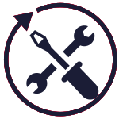

请访问原文链接：VMware vSphere 8.0 Update 3j 下载 - 企业级工作负载平台 查看最新版。原创作品，转载请保留出处。
作者主页：sysin.org
企业级工作负载平台
vSphere
获得企业级工作负载平台的强大功能。提高工作负载性能、提高安全性并加快业务创新。

适用于传统和下一代应用程序的企业级工作负载平台
产品优势
提高运营效率
提高 IT 生产力并降低运营费用。
提高工作负载性能
为更大的 AI 工作负载提供支持并优化 GPU 资源的性能。
加速 DevOps 创新
通过 DevOps 服务实现虚拟机和容器的自助配置。
vSphere 新功能

生命周期管理
使用 vSphere 配置文件轻松管理集群级别的主机配置。轻松检测并解决 vCenter 实例的配置偏差。
Tanzu Kubernetes Grid 集成
直接在 vSphere 上运行 Tanzu Kubernetes Grid 服务，以简化 Kubernetes 的本地操作。
减少升级的计划停机时间
以最小的中断升级 vCenter 实例。
提高大型 AI/ML 工作负载性能
通过支持每个虚拟机最多 16 个 vGPU、每个虚拟机 32 个直通设备以及 NVLink 和 NVSwitch 技术的部署，增强大型 AI/ML 工作负载的性能。
最大化 GPU 资源的投资回报率
通过 GPU 感知的工作负载放置和负载平衡 (sysin)，在不同工作负载之间更有效地共享 GPU 资源。
vSphere 绿色指标
跟踪主机和虚拟机级别的功耗。发现优化消费的机会并为组织的可持续发展目标做出贡献。
改善基础设施健康状况
最大限度地提高可见性，以保持工作负载的最佳性能。
DevOps 自助服务
为 DevOps 和开发团队提供对基础设施资源的自助访问 (sysin)，以加快上市速度。
运行现代应用程序
在统一平台上使用容器和虚拟机构建和运行现代应用程序以简化管理。
解决传统和下一代应用挑战
应用场景
人工智能和机器学习
获取高级 AI/ML 服务和工作负载所需的企业级数据中心、云和边缘基础设施。
大数据和现代数据应用
通过经济高效的统一故障转移保护 (sysin)，简化大数据基础设施管理并最大限度地减少停机时间。轻松确定优先级并共享数据中心资源以进行智能决策。
高性能计算 (HPC)
通过按需基础设施、集中管理和数据治理（包括敏感数据的控制）更快地获得洞察。vSphere HPC 选项是定制的，可根据 HPC 工作负载进行扩展。
比较 vSphere 版本
Subscription
VMware vSphere Product Line Comparison
vSphere Standard
Basic server virtualization for development and testing environments.
用于开发和测试环境的基础服务器虚拟化。
- ESXi Standard
- vCenter Standard
vSphere Enterprise Plus
Industry leading enterprise workload engine to power on-premises environments running on virtual machines.
业界领先的企业级工作负载平台，专为运行在虚拟机上的本地环境提供强大支持。
- ESXi Enterprise Plus
- vCenter Standard
vSphere Foundation
Fully-featured
Enterprise workload engine to optimize IT infrastructure, run both virtual machines and Kubernetes clusters, and deploy HCI.
专为优化 IT 基础设施而设计的企业级工作负载引擎，能够同时运行虚拟机和 Kubernetes 集群，并可用于部署超融合基础架构（HCI）。
- ESXi Enterprise Plus
- vCenter Standard
- vSphere Kubernetes Service (formerly Tanzu Kubernetes Grid service)
- VMware Cloud Foundation Operations, which includes
- VCF Operations for Logs
- VCF Operations Diagnostics (formerly Skyline)
- vSAN (250 GiB per core)
- Plus available add-ons
学习、评估、实施
新增功能
请参看：VMware vSphere 8 Update 3 新增功能
下载地址
The VMware vSphere architecture consists of the following components:
- A base hypervisor, vSphere ESXi Installable, that is installed on every physical server planned for hosting virtual machines
- One instance of a management server called VMware vCenter Server that enables centralized management of multiple vSphere hosts.
VMware vSphere Hypervisor (ESXi) 8.0
VMware vCenter Server 8.0
VMware vSphere Hypervisor (ESXi) 8.0U3
百度网盘链接：https://pan.baidu.com/s/11UgtuWzjkzGwNIWaPyWCpg?pwd=np5p
发布日期：2024-06-25
VMware vSphere Hypervisor (ESXi ISO) image
File Name: VMware-VMvisor-Installer-8.0U3-24022510.x86_64.iso
File Size: 605.63 MBVMware vSphere Hypervisor (ESXi) Offline Bundle
File Name: VMware-ESXi-8.0U3-24022510-depot.zip
File Size: 599 MBDell Custom Image for ESXi 8.0U3 Install CD
百度网盘链接：https://pan.baidu.com/s/1df6Z_kl0icGXgVPHRWQFEg?pwd=8nix- HPE ProLiant Custom Image for ESXi 8.0U3 Install CD
百度网盘链接：https://pan.baidu.com/s/1N5aL9vYMvCoT-LOYAJWrTA?pwd=v91b - HPE Synergy Custom Image for ESXi 8.0U3 Install CD
- HPE Superdome Flex and Compute Scale-up Server family Custom Image for ESXi 8.0U3 Install CD
- Inspur Custom Image for ESXi 8.0U3 Install CD
百度网盘链接：https://pan.baidu.com/s/1n1uCKdslgzialMHnwRZ55A?pwd=hk4s - Lenovo Custom Image for ESXi 8.0U3 Install CD
百度网盘链接：https://pan.baidu.com/s/142V_dBX5nJHexLoATbq4tQ?pwd=ur4a - Cisco Custom Image for ESXi 8.0U3 Install CD
- Fujitsu Custom Image for ESXi 8.0U3 Install CD
- Hitachi Vantara Custom Image for 8.0U3 Install CD
- Hitachi Custom Image for 8.0U3 Install CD
- NEC Custom Image for VMware ESXi 8.0U3 Install CD
- Huawei Custom Image for VMware ESXi 8.0U3 Install CD
- xFusion Custom Image for VMware ESXi 8.0U3 Install CD
- 请访问：VMware ESXi 8.0U3j macOS Unlocker & OEM BIOS 2.7 标准版和厂商定制版
VMware vCenter Server 8.0U3
百度网盘链接：https://pan.baidu.com/s/1J6cWlMu6_b6Z_cv-OFONVA?pwd=pfx7
发布日期：2024-06-25
VMware vCenter Server Appliance
File Name: VMware-VCSA-all-8.0.3-24022515.iso
File Size: 10.8 GBVMware vCenter Server Appliance Patch
File Name: VMware-vCenter-Server-Appliance-8.0.3.00000-24022515-patch-FP.iso
File Size: 7.92 GBVMware vCenter Server Appliance Update Bundle
File Name: VMware-vCenter-Server-Appliance-8.0.3.00000-24022515-updaterepo.zip
File Size: 8.16 GB
VMware vSphere Hypervisor (ESXi) 8.0U3b
百度网盘链接：https://pan.baidu.com/s/1i11LxTdUfoxHZEtDgq2DSw?pwd=vquf
- 发布日期：2024-09-17
- VMware vSphere 分布式服务引擎支持 NVIDIA Bluefield-3 DPU
- 添加了对 HPE、Cisco 和 Supermicro 的四款服务器 vSphere Quick Boot 支持
修复了 25 个已知问题
VMware vSphere Hypervisor (ESXi ISO) image
File Name: VMware-VMvisor-Installer-8.0U3b-24280767.x86_64.iso
File Size: 606.38 MBVMware vSphere Hypervisor (ESXi) Offline Bundle
File Name: VMware-ESXi-8.0U3b-24280767-depot.zip
File Size: 948.66 MBDell Custom Image for ESXi 8.0U3b Install CD
- HPE ProLiant Custom Image for ESXi 8.0U3b Install CD
- HPE Synergy Custom Image for ESXi 8.0U3b Install CD
- HPE Superdome Flex and Compute Scale-up Server family Custom Image for ESXi 8.0U3b Install CD
- Inspur Custom Image for ESXi 8.0U3b Install CD
- Lenovo Custom Image for ESXi 8.0U3b Install CD
- Cisco Custom Image for ESXi 8.0U3b Install CD
- Fujitsu Custom Image for ESXi 8.0U3b Install CD
- Hitachi Vantara Custom Image for 8.0U3b Install CD
- Hitachi Custom Image for 8.0U3b Install CD
- NEC Custom Image for VMware ESXi 8.0U3b Install CD
- Huawei Custom Image for VMware ESXi 8.0U3b Install CD
- xFusion Custom Image for VMware ESXi 8.0U3b Install CD
- 请访问：VMware ESXi 8.0U3j macOS Unlocker & OEM BIOS 2.7 标准版和厂商定制版
VMware vCenter Server 8.0U3b
百度网盘链接：https://pan.baidu.com/s/1wf2YTlXa1qaTbH5XZHM52w?pwd=3hgc
- 发布日期：2024-09-17
- 此版本解决了 CVE-2024-38812 和 CVE-2024-38813
修复了 20 个已知问题
VMware vCenter Server Appliance
File Name: VMware-VCSA-all-8.0.3-24262322.iso
File Size: 11.54 GBVMware vCenter Server Appliance Patch
File Name: VMware-vCenter-Server-Appliance-8.0.3.00200-24262322-patch-FP.iso
File Size: 7.97 GBVMware vCenter Server Appliance Update Bundle
File Name: VMware-vCenter-Server-Appliance-8.0.3.00200-24262322-updaterepo.zip
File Size: 8.22 GB
VMware vSphere Hypervisor (ESXi) 8.0U3c
百度网盘链接：https://pan.baidu.com/s/1ZQ9D9o-9bHywVm0V84jF3A?pwd=s65u
- 发布日期：2024-12-12
已解决的问题：vSphere vMotion tasks fail with an error NamespaceMgr could not lock the db file
VMware vSphere Hypervisor (ESXi ISO) image
File Name: VMware-ESXi-8.0U3c-24414501-x86_64.isoVMware vSphere Hypervisor (ESXi) Offline Bundle
File Name: VMware-ESXi-8.0U3c-24414501-depot.zip
OEM Custom Image：
- Dell Custom Image for ESXi 8.0U3c Install CD A02
- HPE ProLiant Custom Image for ESXi 8.0U3c Install CD Oct2024
- HPE Synergy Custom Image for ESXi 8.0U3c Install CD Jul2024
- HPE Superdome Flex and Compute Scale-up Server family Custom Image for ESXi 8.0U3c Install CD Jun2024
- IEIT SYSTEMS Custom Image for ESXi 8.0U3c Install CD
- Lenovo Custom Image for ESXi 8.0U3c Install CD S03
- Cisco Custom Image for ESXi 8.0U3c Install CD 4.3.4-a
- Fujitsu Custom Image for ESXi 8.0U3c Install CD v580-1
- Hitachi Custom Image for 8.0U3c Install CD 1401
- NEC Custom Image for VMware ESXi 8.0U3c Install CD
- Huawei Custom Image for VMware ESXi 8.0U3c Install CD
- xFusion Custom Image for VMware ESXi 8.0U3c Install CD
- 请访问：VMware ESXi 8.0U3j macOS Unlocker & OEM BIOS 2.7 标准版和厂商定制版
VMware vCenter Server 8.0U3c
百度网盘链接：https://pan.baidu.com/s/19mdllfgDWkiSFFCy-jel-A?pwd=n6t2
- 发布日期：2024-10-09
此版本解决了当会话空闲时间超过 50 分钟时 vSphere Client 变得无响应的问题。
VMware vCenter Server Appliance
File Name: VMware-VCSA-all-8.0.3-24305161.iso
File Size: 11.54 GBVMware vCenter Server Appliance Patch
File Name: VMware-vCenter-Server-Appliance-8.0.3.00300-24305161-patch-FP.iso
File Size: 7.97 GBVMware vCenter Server Appliance Update Bundle
File Name: VMware-vCenter-Server-Appliance-8.0.3.00300-24305161-updaterepo.zip
File Size: 8.22 GB
VMware vSphere Hypervisor (ESXi) 8.0U3d
百度网盘链接：https://pan.baidu.com/s/1ONx6GaD49ufkzD4SUnZ3sQ?pwd=x874
- 发布日期：2025-03-04
仅安全更新：解决了 CVE-2025-22224、CVE-2025-22225 和 CVE-2025-22226。有关详情请参阅 VMSA-2025-0004。
VMware vSphere Hypervisor (ESXi ISO) image
File Name: VMware-ESXi-8.0U3d-24585383-x86_64.isoVMware vSphere Hypervisor (ESXi) Offline Bundle
File Name: VMware-ESXi-8.0U3d-24585383-depot.zip
OEM Custom Image：
- Dell Custom Image for ESXi 8.0U3d Install CD A03
- HPE ProLiant Custom Image for ESXi 8.0U3d Install CD Feb2025
- HPE Synergy Custom Image for ESXi 8.0U3d Install CD Nov2024
- HPE Superdome Flex and Compute Scale-up Server family Custom Image for ESXi 8.0U3d Install CD Feb2025
- IEIT SYSTEMS Custom Image for ESXi 8.0U3d Install CD
- Lenovo Custom Image for ESXi 8.0U3d Install CD S05
- Cisco Custom Image for ESXi 8.0U3d Install CD 4.3.5-a
- Fujitsu Custom Image for ESXi 8.0U3d Install CD v580-1
- Hitachi Custom Image for 8.0U3d Install CD 1401
- NEC Custom Image for VMware ESXi 8.0U3d Install CD
- Huawei Custom Image for VMware ESXi 8.0U3d Install CD
- xFusion Custom Image for VMware ESXi 8.0U3d Install CD
- 请访问：VMware ESXi 8.0U3j macOS Unlocker & OEM BIOS 2.7 标准版和厂商定制版
VMware vCenter Server 8.0U3d
百度网盘链接：https://pan.baidu.com/s/1V-mY2UTkEUeESajNoStMlA?pwd=cqtv
- 发布日期：2024-10-21
安全修复：此版本解决了 CVE-2024-38812。
VMware vCenter Server Appliance
File Name: VMware-VCSA-all-8.0.3-24322831.iso
File Size: 11.54 GBVMware vCenter Server Appliance Patch
File Name: VMware-vCenter-Server-Appliance-8.0.3.00400-24322831-patch-FP.iso
File Size: 7.97 GBVMware vCenter Server Appliance Update Bundle
File Name: VMware-vCenter-Server-Appliance-8.0.3.00400-24322831-updaterepo.zip
File Size: 8.22 GB
VMware vSphere Hypervisor (ESXi) 8.0U3e
百度网盘链接：https://pan.baidu.com/s/1I5FvBshdJcFAAejvOGM5GQ?pwd=qixe
- 发布日期：2025-04-10
新增功能：USB 驱动程序支持 CDC-NCM 协议，新增 4 项驱动对 vSphere Quick Boot 的支持，100 多项已知问题修复，篇幅过长，详见官方文档。
VMware vSphere Hypervisor (ESXi ISO) image
File Name: VMware-VMvisor-Installer-8.0U3e-24674464.x86_64.isoVMware vSphere Hypervisor (ESXi) Offline Bundle
File Name: VMware-ESXi-8.0U3e-24674464-depot.zip
VMware vSphere Hypervisor (ESXi) 8.0U3e Free
百度网盘链接：https://pan.baidu.com/s/1H7nBll01fxtc0wDEJ4v3Qg?pwd=rawk
- VMware vSphere Hypervisor (ESXi ISO) image with Free License
File Name: VMware-VMvisor-Installer-8.0U3e-24677879.x86_64.iso
OEM Custom Image：
- Dell Custom Image for ESXi 8.0U3e Install CD
- HPE ProLiant Custom Image for ESXi 8.0U3e Install CD
- HPE Synergy Custom Image for ESXi 8.0U3e Install CD
- HPE Superdome Flex and Compute Scale-up Server family Custom Image for ESXi 8.0U3e Install CD
- IEIT SYSTEMS Custom Image for ESXi 8.0U3e Install CD
- Lenovo Custom Image for ESXi 8.0U3e Install CD
- H3C Custom Image for ESXi 8.0U3e Install CD
- Cisco Custom Image for ESXi 8.0U3e Install CD
- Fujitsu Custom Image for ESXi 8.0U3e Install CD
- Hitachi Custom Image for 8.0U3e Install CD
- NEC Custom Image for VMware ESXi 8.0U3e Install CD
- Huawei Custom Image for VMware ESXi 8.0U3e Install CD
- xFusion Custom Image for VMware ESXi 8.0U3e Install CD
- 请访问：VMware ESXi 8.0U3j macOS Unlocker & OEM BIOS 2.7 标准版和厂商定制版
VMware vCenter Server 8.0U3e
百度网盘链接：https://pan.baidu.com/s/1FA6Iuzlix_MvmmVQo0x8tw?pwd=rpz5
- 发布日期：2025-04-10
新增功能：40 多项已知问题修复，篇幅过长，详见官方文档。
VMware vCenter Server Appliance
File Name: VMware-VCSA-all-8.0.3-24674346.iso
File Size: 11.49 GBVMware vCenter Server Appliance Patch
File Name: VMware-vCenter-Server-Appliance-8.0.3.00500-24674346-patch-FP.iso
File Size: 7.99 GBVMware vCenter Server Appliance Update Bundle
File Name: VMware-vCenter-Server-Appliance-8.0.3.00500-24674346-updaterepo.zip
File Size: 7.74 GB
VMware vSphere Hypervisor (ESXi) 8.0U3f
百度网盘链接：https://pan.baidu.com/s/1cGBjiR8Gtf3cm7yrGGHoWA?pwd=t8rz
- 发布日期：2025-07-16
安全更新：此版本解决了 CVE-2025-41236、CVE-2025-41237、CVE-2025-41238 和 CVE-2025-41239。另外此版本解决了 CVE-2025-2884，B 公司已评估此问题的严重程度处于中等范围内。
VMware vSphere Hypervisor (ESXi ISO) image
File Name: VMware-VMvisor-Installer-8.0U3f-24784735.x86_64.isoVMware vSphere Hypervisor (ESXi) Offline Bundle
File Name: VMware-ESXi-8.0U3f-24784735-depot.zip
OEM Custom Image：
- Dell Custom Image for ESXi 8.0U3f Install CD
- HPE ProLiant Custom Image for ESXi 8.0U3f Install CD
- HPE Synergy Custom Image for ESXi 8.0U3f Install CD
- HPE Superdome Flex and Compute Scale-up Server family Custom Image for ESXi 8.0U3f Install CD
- Inspur/IEIT SYSTEMS Custom Image for ESXi 8.0U3f Install CD
- Lenovo Custom Image for ESXi 8.0U3f Install CD
- H3C Custom Image for ESXi 8.0U3f Install CD
- Cisco Custom Image for ESXi 8.0U3f Install CD
- Fujitsu Custom Image for ESXi 8.0U3f Install CD
- Hitachi Custom Image for 8.0U3f Install CD
- NEC Custom Image for VMware ESXi 8.0U3f Install CD
- Huawei Custom Image for VMware ESXi 8.0U3f Install CD
- xFusion Custom Image for VMware ESXi 8.0U3f Install CD
- 请访问：VMware ESXi 8.0U3j macOS Unlocker & OEM BIOS 2.7 标准版和厂商定制版
VMware vSphere Hypervisor (ESXi) 8.0U3g
百度网盘链接：https://pan.baidu.com/s/1K3fcty3geha3eDarBB_5YA?pwd=7wba
- 发布日期：2025-07-29
若干已知问题修复，详见官方文档。
VMware vSphere Hypervisor (ESXi ISO) image
File Name: VMware-VMvisor-Installer-8.0U3g-24859861.x86_64.isoVMware vSphere Hypervisor (ESXi) Offline Bundle
File Name: VMware-ESXi-8.0U3g-24859861-depot.zip
OEM Custom Image：
- Dell Custom Image for ESXi 8.0U3g Install CD
- HPE ProLiant Custom Image for ESXi 8.0U3g Install CD
- HPE Synergy Custom Image for ESXi 8.0U3g Install CD
- HPE Superdome Flex and Compute Scale-up Server family Custom Image for ESXi 8.0U3g Install CD
- Inspur/IEIT SYSTEMS Custom Image for ESXi 8.0U3g Install CD
- Lenovo Custom Image for ESXi 8.0U3g Install CD
- H3C Custom Image for ESXi 8.0U3g Install CD
- Cisco Custom Image for ESXi 8.0U3g Install CD
- Fujitsu Custom Image for ESXi 8.0U3g Install CD
- Hitachi Custom Image for 8.0U3g Install CD
- NEC Custom Image for VMware ESXi 8.0U3g Install CD
- Huawei Custom Image for VMware ESXi 8.0U3g Install CD
- xFusion Custom Image for VMware ESXi 8.0U3g Install CD
- 请访问：VMware ESXi 8.0U3j macOS Unlocker & OEM BIOS 2.7 标准版和厂商定制版
VMware vCenter Server 8.0U3g
百度网盘链接：https://pan.baidu.com/s/1Kha2Tm6-lOmdhuTVrMd1vQ?pwd=wx1k
- 发布日期：2025-07-29
新增功能：CVE-2025-41241 安全更新和若干已知问题修复，详见官方文档。
VMware vCenter Server Appliance
File Name: VMware-VCSA-all-8.0.3-24853646.iso
File Size: 11.67 GBVMware vCenter Server Appliance Patch
File Name: VMware-vCenter-Server-Appliance-8.0.3.00600-24853646-patch-FP.iso
File Size: 7.71 GBVMware vCenter Server Appliance Update Bundle
File Name: VMware-vCenter-Server-Appliance-8.0.3.00600-24853646-updaterepo.zip
File Size: 7.96 GB
VMware vSphere Hypervisor (ESXi) 8.0U3h sysin
百度网盘链接：https://pan.baidu.com/s/1m9XOOffh-ewmEoL9mduskg?pwd=ybhb
- 发布日期：2025-12-15
新增 vCenter 和 ESXi SSL 证书自动续期功能，以及 40 项已知问题修复。详见官方文档及本站相关发布。
VMware vSphere Hypervisor (ESXi ISO) image
File Name: VMware-VMvisor-Installer-8.0U3h-25067014.x86_64.isoVMware vSphere Hypervisor (ESXi) Offline Bundle
File Name: VMware-ESXi-8.0U3h-25067014-depot.zip
OEM Custom Image：
- Dell Custom Image for ESXi 8.0U3h Install CD
- HPE ProLiant Custom Image for ESXi 8.0U3h Install CD
- HPE Synergy Custom Image for ESXi 8.0U3h Install CD
- HPE Superdome Flex and Compute Scale-up Server family Custom Image for ESXi 8.0U3h Install CD
- Inspur/IEIT SYSTEMS Custom Image for ESXi 8.0U3h Install CD
- Lenovo Custom Image for ESXi 8.0U3h Install CD
- H3C Custom Image for ESXi 8.0U3h Install CD
- Cisco Custom Image for ESXi 8.0U3h Install CD
- Fujitsu Custom Image for ESXi 8.0U3h Install CD
- Hitachi Custom Image for 8.0U3h Install CD
- NEC Custom Image for VMware ESXi 8.0U3h Install CD
- Huawei Custom Image for VMware ESXi 8.0U3h Install CD
- xFusion Custom Image for VMware ESXi 8.0U3h Install CD
- 请访问：VMware ESXi 8.0U3j macOS Unlocker & OEM BIOS 2.7 标准版和厂商定制版
VMware vCenter Server 8.0U3h
百度网盘链接：https://pan.baidu.com/s/1BErF2QOgPYS5SRl99rPpgw?pwd=x44t
- 发布日期：2025-12-15
新增 vCenter 和 ESXi SSL 证书自动续期功能，以及 26 项已知问题修复。详见官方文档及本站相关发布。
VMware vCenter Server Appliance
File Name: VMware-VCSA-all-8.0.3-25092719.iso
File Size: 11.67 GBVMware vCenter Server Appliance Patch
File Name: VMware-vCenter-Server-Appliance-8.0.3.00700-25092719-patch-FP.iso
File Size: 7.76 GBVMware vCenter Server Appliance Update Bundle
File Name: VMware-vCenter-Server-Appliance-8.0.3.00700-25092719-updaterepo.zip
File Size: 8.03 GB
VMware vCenter Server 8.0U3h Hotpatch
百度网盘链接：https://pan.baidu.com/s/183TG4q5tDcVaEDqj_bX1mw?pwd=4e67
- 发布日期：2025-12-24
问题修复：Content Library Sync task does not use SSL with NFC
VMware vCenter Server Appliance Patch
File Name: VMware-vCenter-Server-Appliance-8.0.3.00701-25117113-patch-FP.iso
File Size: 7.76 GB
VMware vSphere Hypervisor (ESXi) 8.0U3i sysin
百度网盘链接：https://pan.baidu.com/s/1EZzZ4EHwkXpskiW1ICP5QQ?pwd=xufk
- 发布日期：2026-02-14
无新增功能，40 项已知问题修复以及 CVE-2025-15467 安全修复。详见官方文档及本站相关发布。
VMware vSphere Hypervisor (ESXi ISO) image
File Name: VMware-VMvisor-Installer-8.0U3i-25205845.x86_64.isoVMware vSphere Hypervisor (ESXi) Offline Bundle
File Name: VMware-ESXi-8.0U3i-25205845-depot.zip
OEM Custom Image：
- Dell Custom Image for ESXi 8.0U3i Install CD
- HPE ProLiant Custom Image for ESXi 8.0U3i Install CD
- HPE Synergy Custom Image for ESXi 8.0U3i Install CD
- HPE Superdome Flex and Compute Scale-up Server family Custom Image for ESXi 8.0U3i Install CD
- Inspur/IEIT SYSTEMS Custom Image for ESXi 8.0U3i Install CD
- Lenovo Custom Image for ESXi 8.0U3i Install CD
- H3C Custom Image for ESXi 8.0U3i Install CD
- Cisco Custom Image for ESXi 8.0U3i Install CD
- Fujitsu Custom Image for ESXi 8.0U3i Install CD
- Hitachi Custom Image for 8.0U3i Install CD
- NEC Custom Image for VMware ESXi 8.0U3i Install CD
- Huawei Custom Image for VMware ESXi 8.0U3i Install CD
- xFusion Custom Image for VMware ESXi 8.0U3i Install CD
- 请访问：VMware ESXi 8.0U3j macOS Unlocker & OEM BIOS 2.7 标准版和厂商定制版
VMware vCenter Server 8.0U3i
百度网盘链接：https://pan.baidu.com/s/1E3JOaw4kWJb05UDaaAVfow?pwd=d2p6
- 发布日期：2026-02-24
无新增功能，18 项已知问题修复。详见官方文档及本站相关发布。
VMware vCenter Server Appliance
File Name: VMware-VCSA-all-8.0.3-25197330.iso
File Size: 11.78 GBVMware vCenter Server Appliance Patch
File Name: VMware-vCenter-Server-Appliance-8.0.3.00800-25197330-patch-FP.iso
File Size: 7.87 GBVMware vCenter Server Appliance Update Bundle
File Name: VMware-vCenter-Server-Appliance-8.0.3.00800-25197330-updaterepo.zip
File Size: 8.13 GB
VMware vSphere Hypervisor (ESXi) 8.0U3j sysin
百度网盘链接：https://pan.baidu.com/s/1iNP7X-bsYkFYn-a99d4qBA?pwd=9fwd
- 发布日期：2026-05-27
无新增功能，多项已知问题修复。详见官方文档及本站相关发布。
VMware vSphere Hypervisor (ESXi ISO) image
File Name: VMware-VMvisor-Installer-8.0U3j-25429389.x86_64.isoVMware vSphere Hypervisor (ESXi) Offline Bundle
File Name: VMware-ESXi-8.0U3j-25429389-depot.zip
OEM Custom Image：
- Dell Custom Image for ESXi 8.0U3j Install CD
- HPE ProLiant Custom Image for ESXi 8.0U3j Install CD
- HPE Synergy Custom Image for ESXi 8.0U3j Install CD
- HPE Superdome Flex and Compute Scale-up Server family Custom Image for ESXi 8.0U3j Install CD
- Inspur/IEIT SYSTEMS Custom Image for ESXi 8.0U3j Install CD
- Lenovo Custom Image for ESXi 8.0U3j Install CD
- H3C Custom Image for ESXi 8.0U3j Install CD
- Cisco Custom Image for ESXi 8.0U3j Install CD
- Fujitsu Custom Image for ESXi 8.0U3j Install CD
- Hitachi Custom Image for 8.0U3j Install CD
- NEC Custom Image for VMware ESXi 8.0U3j Install CD
- Huawei Custom Image for VMware ESXi 8.0U3j Install CD
- xFusion Custom Image for VMware ESXi 8.0U3j Install CD
- 所有版本就绪，请访问：VMware ESXi 8.0U3j macOS Unlocker & OEM BIOS 2.7 标准版和厂商定制版
VMware vCenter Server 8.0U3j
百度网盘链接：https://pan.baidu.com/s/1nl0afhCEnCNL3-j_nRMcpQ?pwd=dkny
- 发布日期：2026-05-27
无新增功能，多项已知问题修复。详见官方文档及本站相关发布。
VMware vCenter Server Appliance
File Name: VMware-VCSA-all-8.0.3-25413364.iso
File Size: 11.78 GBVMware vCenter Server Appliance Patch
File Name: VMware-vCenter-Server-Appliance-8.0.3.00900-25413364-patch-FP.iso
File Size: 7.87 GBVMware vCenter Server Appliance Update Bundle
File Name: VMware-vCenter-Server-Appliance-8.0.3.00900-25413364-updaterepo.zip
File Size: 8.13 GB
本站定制映像：
- VMware ESXi 8.0U3j macOS Unlocker & OEM BIOS 2.7 标准版和厂商定制版
- VMware ESXi 8.0U3j macOS Unlocker & OEM BIOS 2.7 集成网卡驱动和 NVMe 驱动 (集成驱动版)
相关产品：
- VMware ESXi 8.0U3j 发布 - 领先的裸机 Hypervisor
- VMware vCenter Server 8.0U3j 发布 - 集中管理 vSphere 环境
- VMware vSphere 8.0 Update 3j 下载 - 企业级工作负载平台

文章用于推荐和分享优秀的软件产品及其相关技术，所有软件默认提供官方原版（免费版或试用版），免费分享。对于部分产品笔者加入了自己的理解和分析，方便学习和研究使用。任何内容若侵犯了您的版权，请联系作者删除。如果您喜欢这篇文章或者觉得它对您有所帮助，或者发现有不当之处，欢迎您发表评论，也欢迎您分享这个网站，或者赞赏一下作者，谢谢！
 支付宝赞赏
支付宝赞赏  微信赞赏
微信赞赏赞赏一下
敬请注册！点击 “登录” - “用户注册”（已知不支持 21.cn/189.cn 邮箱）。 请勿使用联合登录（已关闭）。